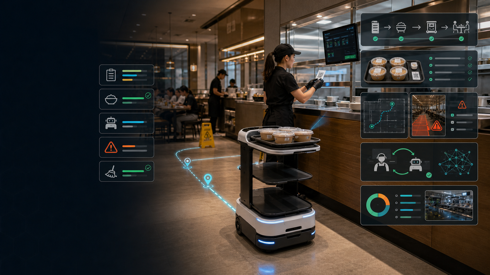

订单不等于交付
KDS/POS 记录菜品做好了，但不知道托盘是否完整、饮料是否漏放、封签是否正确、司机是否拿错。
01 · Problem
错托盘、漏饮料、过敏原漏检、外卖袋交接不清、回盘慢、清洁无证据、备料过量、重做和报废，都会变成出餐延迟、退款、差评、翻台损失和管理黑箱。KDS 只知道“票据完成”，不证明“正确交付”。
KDS/POS 记录菜品做好了，但不知道托盘是否完整、饮料是否漏放、封签是否正确、司机是否拿错。
店长、跑菜员、后厨、收银和外卖取餐区用口头协调补洞，异常没有 owner、SLA 和升级链。
过量备餐、重做、客诉退款、超时废弃和盘余被当作成本统计，缺少回到具体流程的证据。
清洁、温度、持有时间、过敏原、封签和废弃记录经常是事后补表，无法支持总部复盘。
02 · Why Now
机器人、KDS、扫码点餐和平台订单已经进入门店，但多数仍是孤岛设备。餐饮经营者现在更需要一套能减少错单、浪费、重做、等待、清洁漏项和食安证据缺失的闭环系统。
03 · Core Insight
送餐机器人只能搬运“被装上去的东西”。厨房视觉只看一个工位。食物浪费系统多做事后统计。真正的机会是把票据、托盘、外卖袋、机器人路线、回盘、清洁、食安和浪费归因连成同一条闭环。
托盘或外卖袋没有通过视觉、QR、重量、封签、过敏原和温度/持有时间验证，就不该离开出餐口。
每个异常都要有 owner、SLA、纠正动作、复核证据和复发标签，数据分析才有业务含义。
堵路、错托盘、客人未取、低置信度和人工恢复，是训练餐饮机器人最关键的数据。
04 · Solution
它不替代 POS、KDS、机器人、清洁设备或食安系统，而是连接它们：订单进入、托盘/袋子验证、机器人配送或回盘、异常升级、清洁证明、浪费归因、模型训练和总部复盘。

05 · Product Workflow
FoodLoop 的核心不是让机器人多跑一趟，而是让每张票据都进入一个有状态、有证据、有异常处理、有训练数据的餐饮履约流程。
接入 POS/KDS、扫码点餐、外卖平台和桌号/柜号，生成订单 SLA 与任务合约。
视觉、QR/RFID、重量、托盘槽位、封签、过敏原和持有时间验证是否可出发。
AMR/跑菜/回盘/清洁任务本地调度，遇到堵路、湿滑区和低置信度触发接管。
桌号确认、司机交接、回盘到站、清洁照片、废弃记录和主管签名关闭异常。
异常原因、人工恢复、重做归因、路线等待和模型版本进入 LeRobot 与 edge profile。
06 · Market Wedge
FoodLoop 不从街边单店或开放式烹饪开始，而从多门店、强 SOP、订单量大、食安审计强、机器人动线可控的业态切入。中国首批瞄准 100-1000 家门店连锁，海外先从 QSR、casual dining、酒店和团餐试点。
出餐袋核验、漏项提醒、定制项、第三方司机交接和 drive-thru 准确率。
出杯节拍、封签、外卖交接、原料过期、培训一致性和低成本复制。
跑菜、回盘、补餐、清洁 proof、盘余浪费和高峰人力调度。
房号、门禁、电梯、托盘回收、客诉证据和夜间低人力配送。
团餐菜单稳定、空间封闭、审计强，适合餐盘分拣、取餐柜和室内配送。
称重、分装、贴标、追溯、冷链交接、明厨亮灶和出品一致性。
07 · Business Model
定价按站点、机器人、任务量、证据模块和总部管理收费。目标是让年费落在保守已验证节省的 25%-35%，试点阶段证明同班次关闭率、浪费/重做下降和经理追踪工时减少。
中国 ¥399-799/点/月；海外 US$99-199/点/月。手机/平板确认、KDS 旁路、异常工单和基础看板。
中国 ¥1,200-2,800/点/月；海外 US$299-699/点/月。1 个 AI/称重/托盘站 + POS/KDS + 清洁 proof。
中国 ¥3,000-8,000/点/月；海外 US$900-1,800/点/月。多站点、多机器人、食安日志、总部看板和 API。
中国 ¥8,000-30,000/点；海外 US$1,500-6,000/点。60-90 天基线、试点、ROI 和部署方案。
08 · Go-To-Market
第一单不替代员工，不承诺全自动厨房。先用 10-14 天被动基线和 60-90 天试点证明异常关闭和浪费/重做改善，再扩到总部多店、机器人 fleet 和后厨受限工位。
连锁餐饮运营负责人、酒店餐饮总监、团餐运营商、QSR 数字化负责人和机器人经销服务商。
出餐口到桌区/取餐柜/回盘点，或后厨废弃/重做异常站，选择最容易量化的一个流程。
同班次关闭率、错托盘拦截、平均等待、回盘周期、清洁覆盖、浪费/重做金额和 uptime。
POS/KDS、扫码点餐、机器人 OEM、餐饮设备经销商、团餐服务商和 Qualcomm edge 生态。
09 · Competition
FoodLoop 位于 POS/KDS、订单聚合、厨房视觉、送餐/清洁机器人和食物浪费 AI 之间，专注异常闭环：发现、拦截、派单、验证、归因、训练和总部复盘。
Toast、Square、Oracle、NCR、PAR、QSR Automations 知道票据状态，但不验证物理交付。
Olo、DoorDash、Uber Eats、Deliverect 管订单流，但缺少店内托盘、袋子、路线和交接证据。
Agot、PreciTaste、Yum Byte 等做站位和产能优化；FoodLoop 做跨设备异常结案。
Miso、Hyphen、Botinkit、Nala 等适合受限工位；仍需要交付验证、清洁和异常处理。
Bear、Pudu、Keenon、Richtech、Gausium 负责移动；FoodLoop 决定什么时候该动、为何停、如何结案。
Winnow、Leanpath、Orbisk、Kitro、Phood 统计浪费；FoodLoop 把浪费追溯到错单、超时和重做。
10 · Moat
护城河来自餐饮现场的异常语义、系统连接器、菜单/过敏原/托盘 schema、证据账本、HIL 恢复数据、跨门店 benchmark 和 Qualcomm edge profile。
漏项、错项、封签、过敏原、持有时间、堵路、无人取餐、回盘、清洁和重做归因。
Toast、Square、Oracle/NCR、扫码点餐、美团、抖音、微信、机器人 fleet 和清洁设备。
Order ID、托盘 ID、重量差、图像 crop、封签、温度、路线状态、员工签名和模型版本。
堵路恢复、错托盘纠正、客人未取、低置信度、路线等待和人工接管轨迹。
同品牌、同菜单、同班次、同店型的异常密度、关闭率、浪费金额和训练收益。
QNN/AI Hub profile、延迟、内存、NPU 命中、fallback、签名部署和回滚记录。
11 · Architecture
餐厅高峰不能等云端。FoodLoop 在门店侧完成托盘验证、路线控制、清洁证明、异常拦截和本地缓存；云端做总部看板、模型训练、AI Hub/QNN profile、灰度发布和跨店复盘。
POS/KDS、扫码点餐、外卖平台、桌号/柜号、过敏原、promise time、取消和改单事件。
Qualcomm edge 连接相机、QR/RFID、重量、温度、托盘传感器、AMR、清洁站和本地 dashboard。
ROS 2、Nav2、Open-RMF、keepout/speed zones、collision monitor、人工接管和安全 supervisor。
证据账本、LeRobot HIL、中国/海外租户、模型注册、签名 edge update、灰度和回滚。
12 · Competition Demo
演示用 mock POS/KDS、封闭假餐、QR/RFID、托盘重量、低速 AMR、桌号二维码、清洁站和安全围挡。没有热液体、没有开放烹饪、没有顾客识别，展示的是异常闭环和 HIL 训练。
KDS 创建 T12-047：主餐、饮料、过敏原标记、桌号 12，进入 edge gate。
视觉 + QR + 重量发现饮料缺失，系统阻止派车并生成异常证据包。
员工修正后验证通过，AMR 按 Nav2 路线送达桌号，桌面 QR 或平板确认。
机器人回收假托盘到洗碗区，清洁站扫码、空托盘传感器和短视频生成 proof。
堵路触发人工接管，恢复片段进入 LeRobot；dashboard 展示 AI Hub/QNN edge profile。
13 · Why Qualcomm
餐厅有弱网、拥挤人流、反光地面、临时障碍、隐私边界、食安日志和机器人调度。每一次托盘核验、堵路等待、清洁证明和异常接管都需要本地低延迟判断。
托盘、菜品/容器、QR、封签、桌号、湿滑地面、障碍和清洁站都在本地识别。
AI Hub、QNN、QAIRT、ONNX Runtime QNN EP 和量化 profile 让模型上线可验证。
ROS 2、Nav2、Open-RMF、多机器人调度、keepout/speed zones 和接管记录可在 edge 上整合。
顾客和员工画面边缘脱敏；断网时仍可核验、派单、缓存证据和安全停靠。
RB3 Gen 2/QCS6490 做比赛原型，RB5/RB6/IQ10 RRD 形成多摄像头和生产路线。
14 · Ask
比赛阶段需要证明完整餐饮闭环，而不是证明一台机器人能跑路线：订单、托盘核验、异常拦截、配送、回盘、清洁、食安证据、HIL episode 和 edge profile 全部串起来。
RB3 Gen 2、QCS6490/QCS8550、RB5/RB6 或 IQ10 路线，用于多模态核验和机器人调度。
mock POS/KDS API、菜单、过敏原、托盘/外卖袋、清洁 SOP、异常标签和厨房路线样本。
餐饮机器人 OEM、POS/KDS 集成商、茶饮/QSR/团餐试点门店和设备经销服务商。
错单拦截、异常关闭、回盘周期、清洁覆盖、浪费/重做、人工接管和 edge latency。
15 · Claims & Sources
页面不主张“全自动餐厅”“替代服务员/厨师”“固定 ROI”“已获 NSF/UL/FDA/HACCP 认证”“99% 菜品识别”“无人工行为改变”“Qualcomm 官方背书”。FoodLoop 的主张是异常闭环、证据留痕和 human-in-the-loop。
一句话 pitch：连锁餐饮用 FoodLoop 把每张 KDS/POS 票据从“做完”推进到“正确核验、正确交付、异常关闭、有证据可追溯、可训练”。